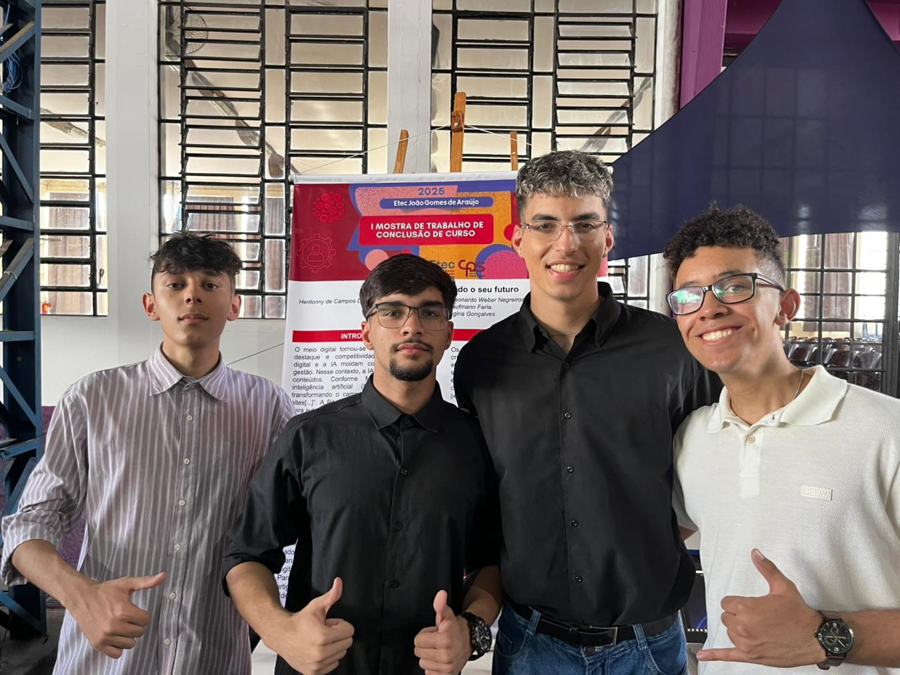

Experiências
Desenvolvimento de Plataforma de Blogs com IA
Trabalho de Conclusão de Curso realizado em equipe, utilizando API da Groq para geração automatizada de blogs e imagens com Inteligência Artificial.

Desenvolvimento de Aplicativos Mobile
Criação de aplicativos utilizando Kodular e Firebase, desenvolvidos em projetos acadêmicos e pessoais.

Grêmio Estudantil Voz Ativa
Participação na organização de iniciativas estudantis, planejamento de eventos e ações voltadas aos alunos.